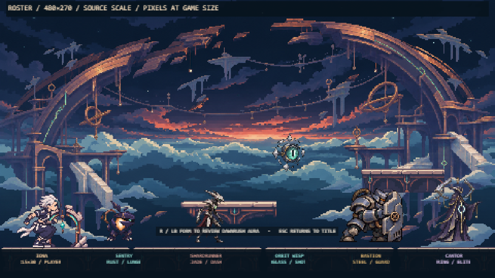
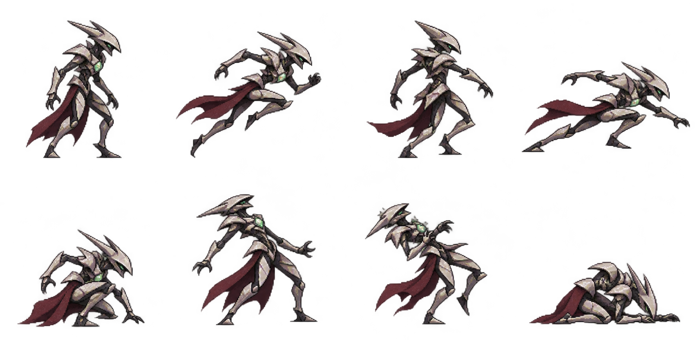
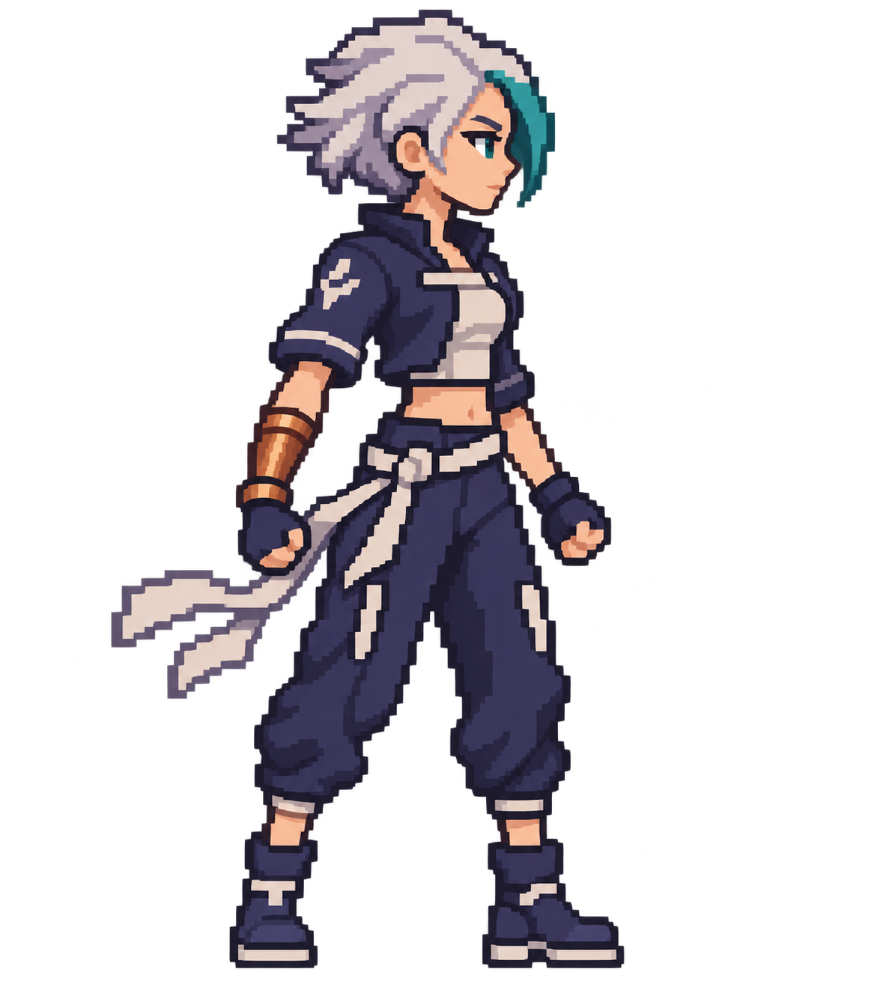

Generated atlases above are the retained native source. The roster screenshot below is the real Phaser development scene at its 480×270 world resolution, enlarged for review; it includes Iona and the existing Fractured Spindle Sentry beside the four new archetypes.

Native source masters

Shardrunner — eight authored poses. Export map and hashes: art-source/enemies/b06/asset-manifest.json.
Existing Sentry source — retained from B03; runtime is the original authored B03/B04 art.

Iona Base source — retained canonical Base master. The live roster board uses the existing B05 60px presentation and 15×30 body.
Native output IDs, exact captured prompts, master dimensions and approval limits are in art-source/enemies/b06/provenance.md. The B06 roster remains an unapproved art-motion candidate; the contact sheet does not imply owner approval.